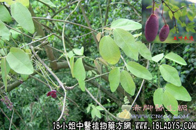

(本文解释权归中药材天地网兄弟站-18小姐中医植物药方网所有,如需转载请注明出处)

别名：木通果实、八月炸、八月札、野香蕉、预知子、野木瓜《药材学》、羊开口、五叶木通《湖南药物志》、通草、附支、丁翁、万年藤、燕复子、乌复子、畜菖子、絮子、桴棪子、八月瓜《中国药用植物志》、黄狗卵子《江苏植物药材志》、木通、沙藤、拿藤切泡《天目山药植物志》、八月渣、木通藤《杭州药用植物志》、圣知子、圣先子、盍合子、仙沼子《中国药学大辞典》（本品为木通的干燥未成熟果实）
功能：能利气催血，杀虫，解毒，疗蛊，消痃癖气块，宿食，胸膈烦闷，催生，有止痛作用。治肝胃气痛、胁痛、月经痛、腰痛、外治蛇虫咬伤。
分布：浙江、江苏。
采集期：秋、冬。
功效：近年民间用以治癌症（详见白花蛇舌草），用量五钱至一两。
(本文解释权归中药材天地网兄弟站-18小姐中医植物药方网所有,如需转载请注明出处)